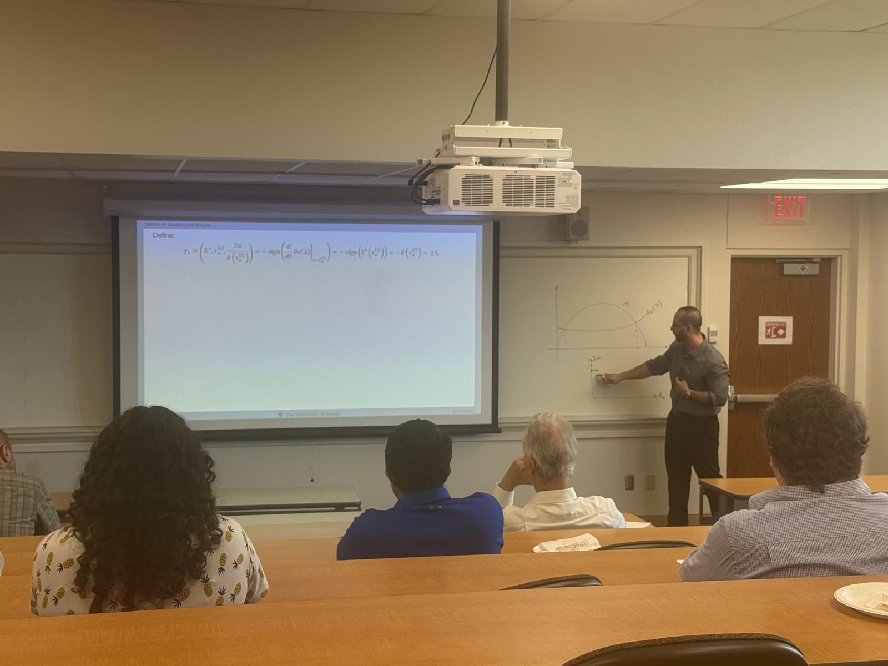
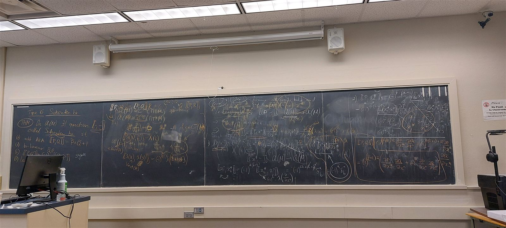

- Complex dynamics and pattern formation in a diffusive epidemic model with an infection-dependent recovery rate.Wael El Khateeb, Chanaka Kottegoda, and Chunhua Shan. doi:10.1016/j.mbs.2025.109602
- Global Hopf bifurcation and connected components in a delayed predator-prey model.Wael El Khateeb, Guihong Fan, Chunhua Shan, and Hao Wang. doi:10.1017/S0956792526100370
- Mentoring through predator-prey: realizing hopes through Polymath Junior.Wael El Khateeb and Steven J. Miller.
- Submitted
Epidemiological impacts of density dependent incidence functions (and post-infection mortality)
Brendan Shrader, Wael El Khateeb, Chunhua Shan, Chadi Saad-Roy, Zhisheng Shuai, and P. van den Driessche. Submitted to Proceedings of the Royal Society B.
- Finalized for submission
High-codimension bifurcation in a predator-prey model with harvesting
Wael El Khateeb and Chunhua Shan.
- Manuscript in preparation
Employing physics-informed neural network structures on gene regulatory networks
Wael El Khateeb, William Kalies, and Bernardo Rivas.
- Work in progress
Impact of the Allee effect on the global dynamics of a predator-prey model
Chanaka Kottegoda, Wael El Khateeb, Farjana Akter, and Chunhua Shan.
High Codimension Bifurcations in Predator-Prey Models
Ph.D. dissertation, University of Toledo. The dissertation develops a unified codimension-3 bifurcation theory for nonlinear biological systems, treating Bogdanov-Takens, nilpotent saddle, and Hopf bifurcations, and establishes criteria for detecting saddle-node-to-saddle heteroclinic loops and related high-codimension dynamics in predator-prey models.

